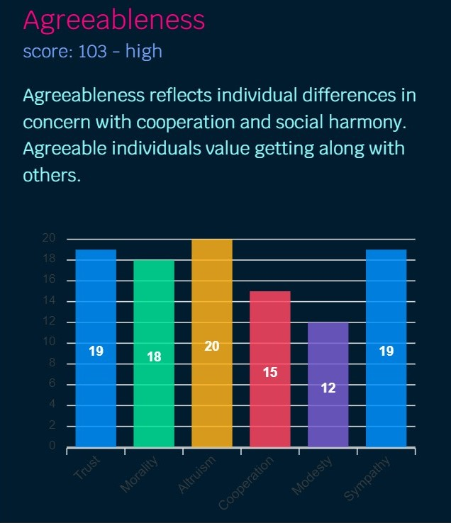
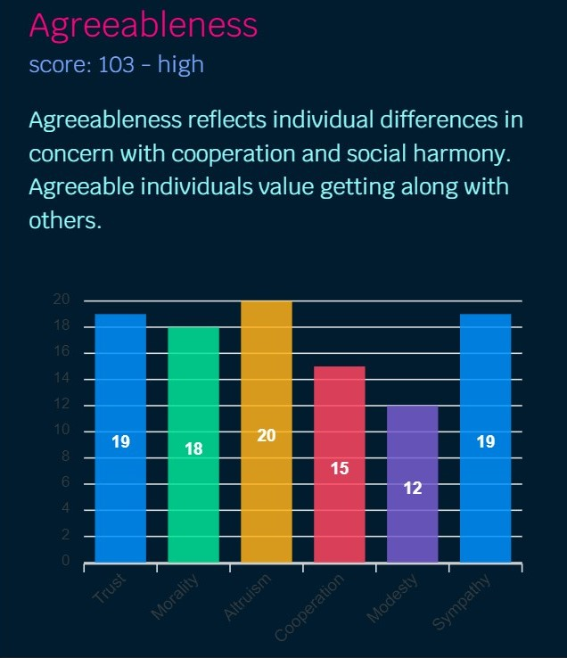
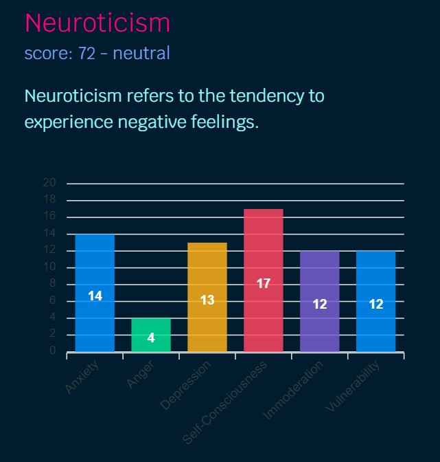
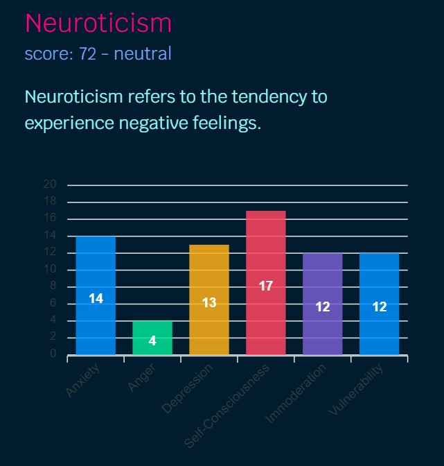

Hello!, my name is Juan Pablo Pagan Marron, born in Cancun Mexico, on the 25th of August 2005.
I have two main passions; Dancing and programming.
I started dancing at the age of 11 and programming at 10, as of the day im writing this im 17 years old, I am fluent in English and Spanish.
I have followed an edX course for Python programming, allthough I did not had the chance to buy a certificate.I have also self learned HTML, JavaScript, and CSS with the help of my uncle, as of today I am looking to learn more languages.
In the subject of dance, I am an intensive dancer that has much experience with Jazz, Hip Hop, Ballet, Conthemporary, and others.
-My OCEAN Personality Test-
I feel like this test should be here because it is one
of the most complete personality tests
out
there
 


 


Copyright ©JPPM/Sakermatcher